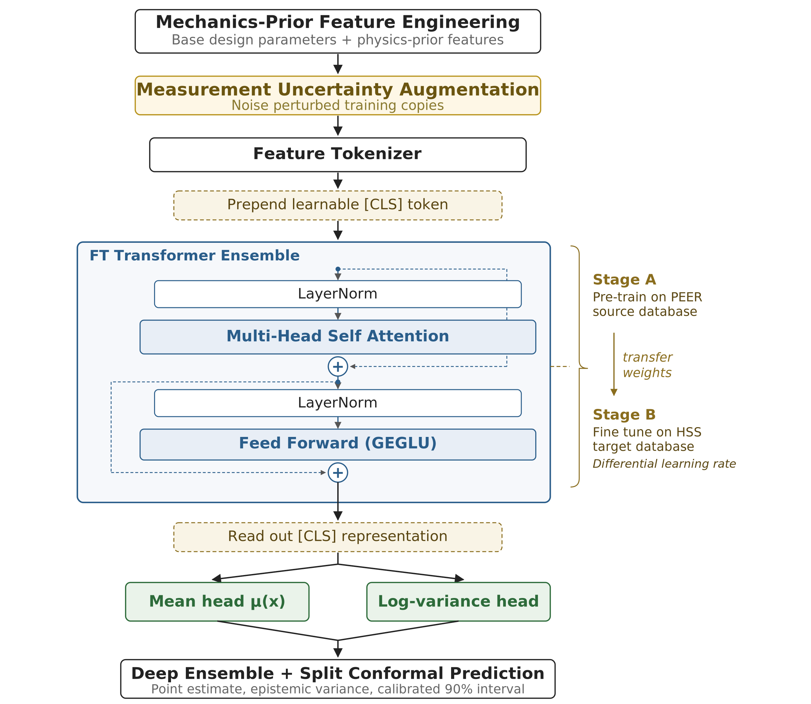

MADE-T is a probabilistic shear-strength estimator for high-strength steel (HSS) reinforced concrete columns. It combines a Feature-Tokenizer Transformer ensemble, mechanics-informed engineered features, measurement-uncertainty data augmentation, transfer learning from a a conventional-RC column database, and split-conformal prediction intervals. On 87 HSS specimens with a held-out 70/30 split, MADE-T achieves R2 = 0.973, MAE = 45.5 kN and MAPE = 8.6% on the full database, with calibrated 90% prediction intervals.
The estimator is a 10-member Feature-Tokenizer Transformer ensemble. Each member is pretrained on the PEER conventional-RC column database and then fine-tuned on the HSS database with differential learning rates. The model consumes nine base parameters together with six mechanics-informed engineered features (a confinement index and five classical shear and drift estimators). Aleatoric uncertainty is read from a per-sample log-variance head; epistemic uncertainty is the spread of the ten ensemble means. A split-conformal calibration on held-out specimens converts the total predictive standard deviation into a 90% prediction interval.
Feature engineering. Nine base inputs (geometry, materials, reinforcement, loading) augmented with confinement index and five classical estimators (Sezen-Moehle, ACI 318-19, Priestley, Berry-Eberhard, Haselton).
Transfer learning. FT-Transformer pretrained on PEER conventional-RC columns, then fine-tuned on HSS specimens with differential learning rates for backbone vs. heads.
Heteroscedastic ensemble. Ten members predict mean and log-variance; ensemble mean and spread give epistemic and aleatoric uncertainty.
Conformal calibration. Normalised split-conformal on held-out specimens delivers a 90% prediction interval with empirical coverage of 93%.

The two sweep variables (X, Y) are greyed out — all other parameters are held at the values below.
@article{wakjira2026madet,
title = {MADE-T: Mechanics Augmented Deep Ensemble with Transfer
Learning for Uncertainty-Aware Shear Capacity Prediction of
High-Strength Steel Reinforced Concrete Columns},
author = {Wakjira, Tadesse G.},
journal = {TBD},
year = {2026},
}